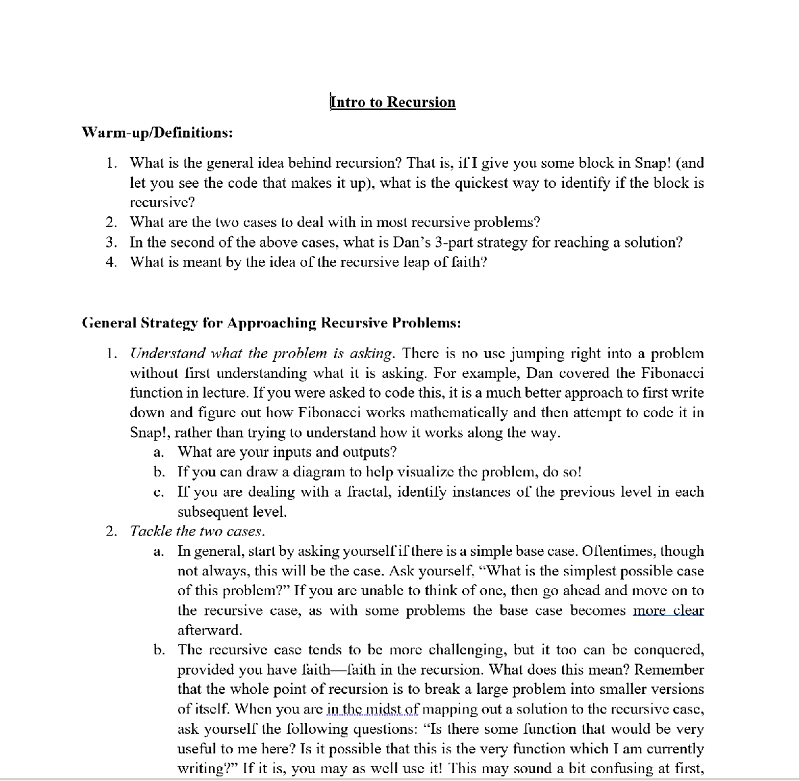
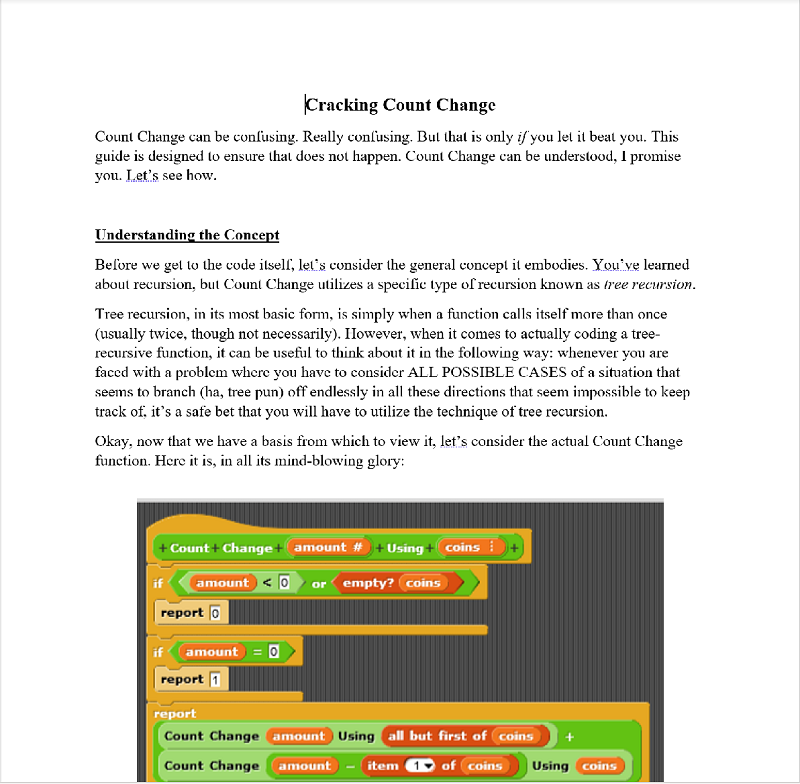

Undergraduate
Student Instructor at
UC Berkeley
Over the past two years, I have taught CS 10: The
Beauty and Joy of Computing and CS 61A: The
Structure and Interpretation of Computer Programs.
I focus on ensuring all of my students leave my class with a
solid foundation in programming and a genuine confidence
in their own abilities. Scroll down to see my teaching
philosophy and various guides and lessons I have
authored for the course.
No Student Left
Behind, No Concept
Too Difficult
Teaching must be about the student, never about
the teacher. It is my genuine belief that the
oft-feared subjects of mathematics and
programming are accessible to everyone, if only
presented properly. A growth mindset is
essential, and can make the difference between a
student who succeeds and one who gives in. That
in mind, my philosophy is quite simple: take it
slowly, acknowledge the little victories, and never
give up on a student.
Various Guides on
Various Topics
Originally written for and used by Berkeley students.
A Guide to Recursive Thinking

Cracking Count Change
